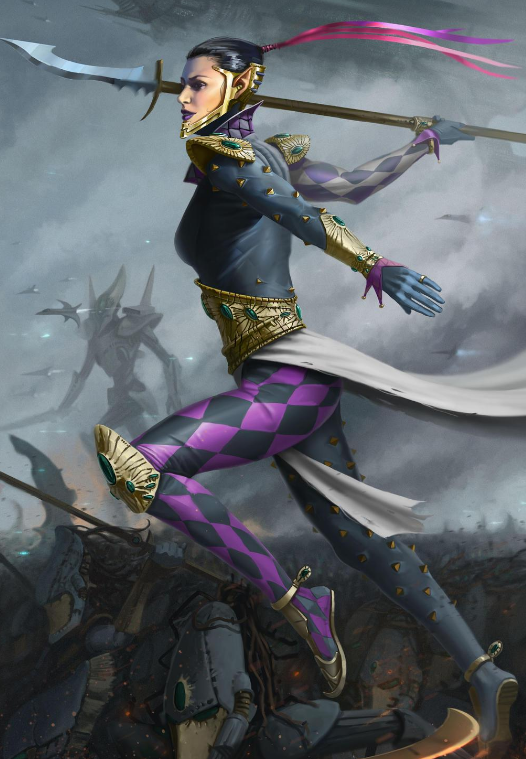

HARLEQUINS
Dossier scellé 997.M41

Les Harlequins ne se comportent ni comme une armée régulière, ni comme une cabale, ni comme une force de conquête identifiable. Ils apparaissent. Ils frappent. Puis ils s’effacent, ne laissant derrière eux que des corps, des récits contradictoires et une impression persistante de cauchemar mal refermé.
Les archives impériales les décrivent comme des guerriers xenos liés à d’antiques rites aeldari, mais cette définition demeure insuffisante. Les Harlequins ne combattent pas seulement. Ils jouent. Ils rejouent. Ils mettent en scène la guerre comme d’autres mettraient en scène un sacrifice.
Leurs mouvements ne suivent pas la logique attendue d’un engagement. Ils bondissent, tournent, disparaissent du regard, reviennent sous un autre angle, puis ouvrent la gorge d’un officier avant que ses propres gardes aient compris qu’il était déjà mort.
Les survivants parlent d’éclats de couleur dans la fumée, de rires impossibles au milieu des hurlements, de silhouettes fines surgissant entre les tirs comme si les lois de la distance et de la matière ne s’appliquaient plus à elles.
Là réside peut-être leur pire aspect. Les Harlequins ne donnent jamais l’impression d’être pris dans la bataille. Ils paraissent au-dessus d’elle. Comme s’ils connaissaient déjà la fin, comme si chaque mort n’était qu’un pas prévu dans une chorégraphie dont l’ennemi ignore encore le sens.
Leur lien avec ce que les xenos nomment le Dieu Moqueur revient fréquemment dans les fragments traduits, mais la plupart de ces sources sont elles-mêmes douteuses, incomplètes ou contaminées par des symboliques étrangères à toute pensée humaine saine.
Ce qui peut être affirmé avec certitude, en revanche, est leur maîtrise de la tromperie visuelle, du déplacement fulgurant et de la mise à mort précise. Le champ de bataille devient en leur présence un espace instable, trompeur, presque théâtral.
Les Harlequins ne chargent pas comme les berserkers. Ils ne submergent pas comme les Tyranides. Ils ne pilonnent pas comme la Navis Imperialis. Ils découpent le réel en fragments de panique, isolent une cible, brisent la cohésion, puis transforment l’escouade entière en spectacle bref et atroce.
Leurs armes elles-mêmes semblent conçues moins pour la guerre conventionnelle que pour l’exécution raffinée. Lames, projectiles, dispositifs énergétiques et champs de distorsion se combinent en une violence rapide, nette, presque élégante. Une élégance monstrueuse, d’autant plus insupportable qu’elle semble dénuée de tout effort.
Il serait pourtant erroné de les réduire à de simples assassins acrobatiques. Les Harlequins poursuivent des objectifs que l’Imperium ne parvient presque jamais à lire correctement. Ils peuvent ignorer une armée entière pour éliminer un individu précis. Ils peuvent massacrer des forces humaines, puis disparaître sans exploiter leur victoire. Ils peuvent anéantir une menace commune, avant de tourner leurs armes contre les témoins devenus superflus.
C’est cette absence de logique humaine qui les rend si dangereux. On ne négocie pas avec eux. On ne prévoit pas leurs limites. On ne sait jamais si l’on est leur cible, leur obstacle, ou simplement un élément de décor dans quelque drame xenos commencé bien avant l’arrivée des forces impériales.
Lorsqu’ils entrent en scène, il est déjà trop tard pour comprendre. Il ne reste qu’à tenir la ligne, prier pour conserver sa raison, et espérer mourir avant de devenir un rôle dans leur représentation.
Fin de l’extrait. Toute rencontre avec des Harlequins doit être classée comme menace imprévisible de niveau extrême.